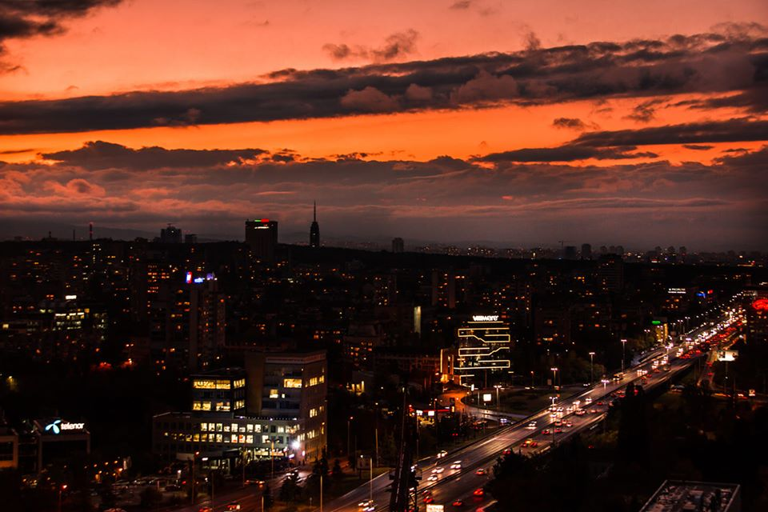
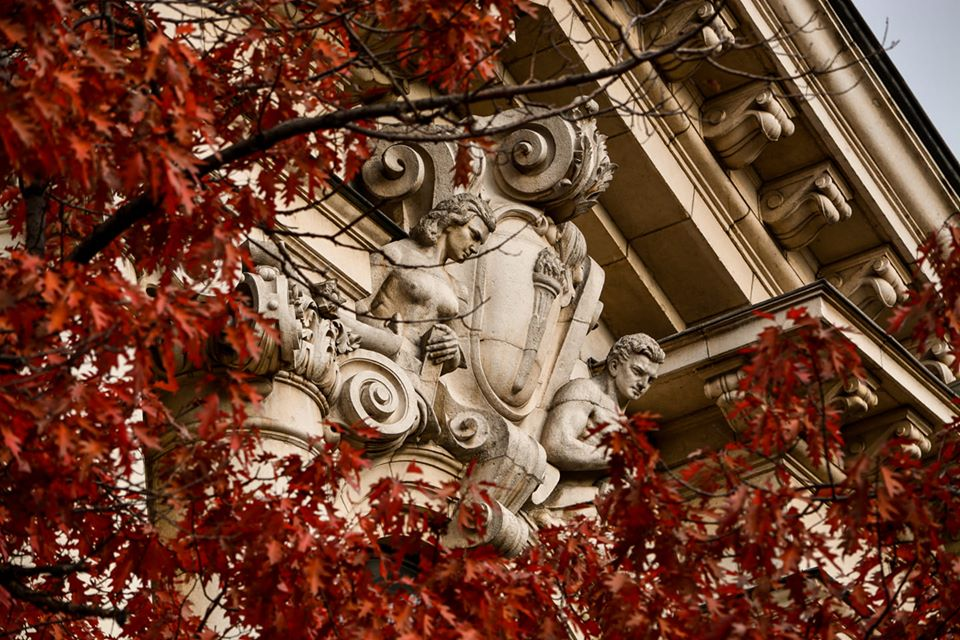
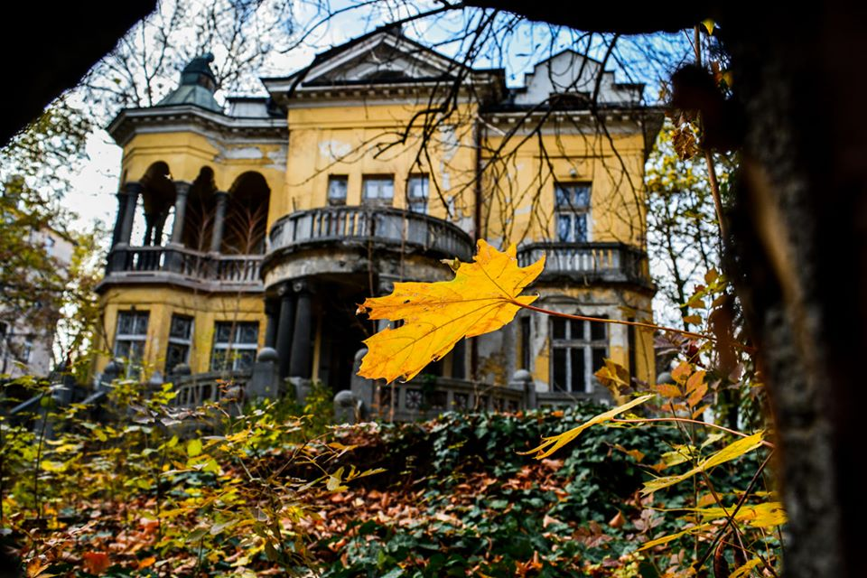
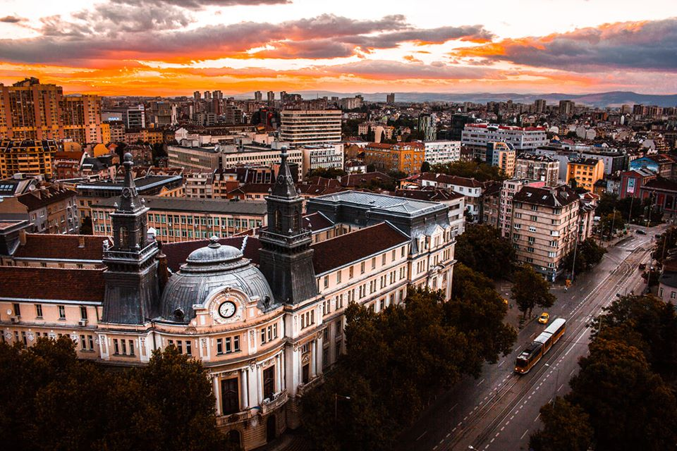
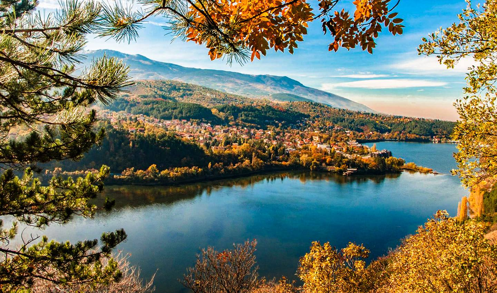
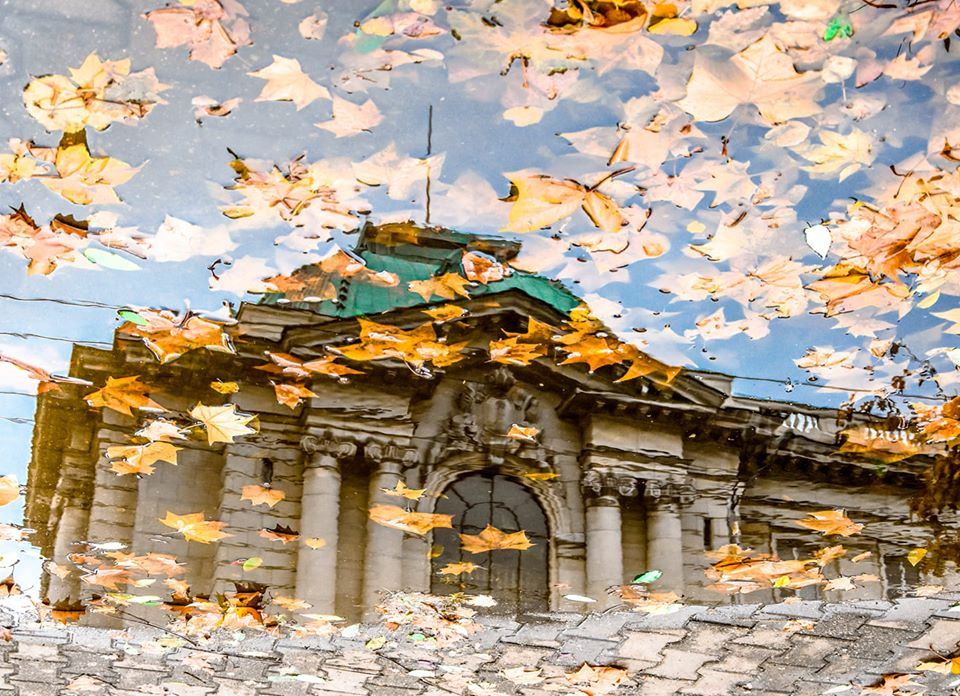
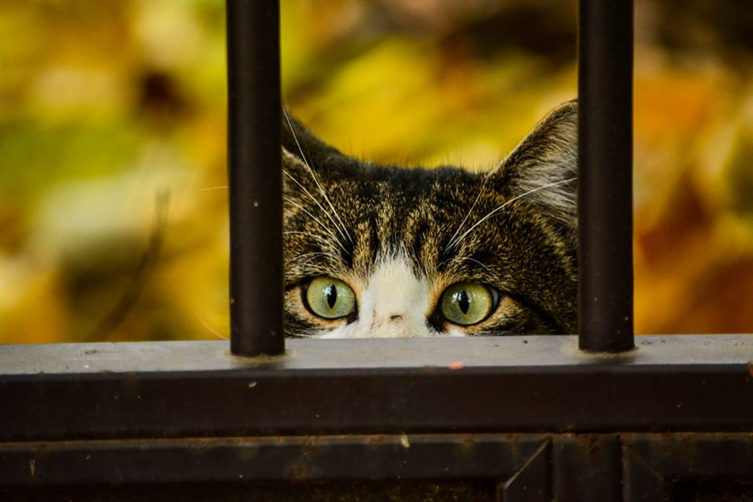
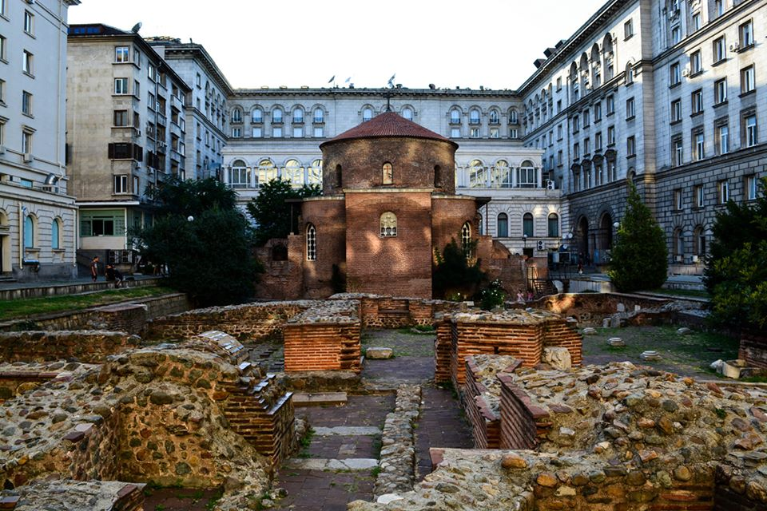
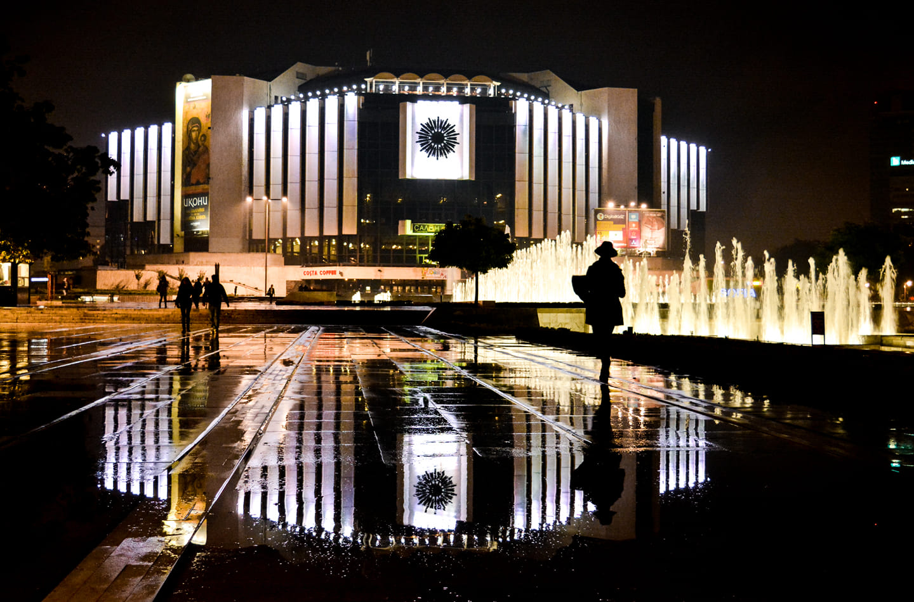

The lights of the city

Autumn red leaves in front of the Sofia University

The strawberry house is one of the architecture landmarks of Sofia

The Ministry of Agriculture is located in Sofia near the Macedonia square. The building dates from the 19th century.

Unlike most European cities, Sofia is not located on a river; however, the Pancharevo lake makes up for it.

Reflection of the Sofia University after a heavey November rain

Plenty of stray cats and dogs live and wonder around Sofia

The St. George Rotonda is the oldest building in Sofia being almost 1700 years old

The National Palace of Culture is located in the heart of Sofia and it's one of its symbols